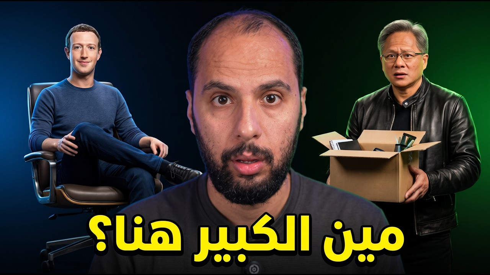

أسهم وشركات
ليه جينسن هوانج مشي في ٣ ايام لكن مارك زوكربيرج محدش يقدر يمشيه؟
مؤسس بنى شركته في 33 سنة ومشي في 3 أيام، والسوق مسح من قيمتها أكتر من 850 مليار دولار في أسوأ لحظة. ومؤسس تاني عدّى فضيحة وتصويت ضده وفضل في مكانه. الفرق في مين ماسك الأصوات، وفي التمن اللي السوق بيحطه على الراجل نفسه.

شغّل الحلقةنور عندها 28 سنة، وكل شهر بتحط جزء من دخلها في الأسهم. نور شخصية خيالية، بس القصتين اللي هنحكيهم حقيقيين جدًا. بتشتري في شركات بتفهمها أو بتستخدمها كل يوم: شوية في Meta عشان شغلها كله على Instagram، وشوية في Nvidia، شركة الـ AI اللي العالم كله بيتكلم عنها، وأول شركة في التاريخ تكسر حاجز الـ 5 تريليون دولار.39
ليلة 11 نوفمبر، ونور نايمة، مجلس إدارة Nvidia كان في اجتماع. والصبح صحيت على كارثة: Jensen Huang، الراجل اللي أسس الشركة من 33 سنة، استقال بعد اعترافه بخيانة زوجية، ولسه تحقيقات مفتوحة.152122 وفي خلال أيام قليلة السهم انهار، وفي أسوأ لحظة كان خسران حوالي خُمس قيمته.29
وهنا نور اتصدمت بحاجة عمرها ما فكرت فيها: هي لما اشترت سهم Nvidia، ماكانتش بتشتري شرايح وبس، كانت بتراهن كمان على راجل واحد. وأول ما الراجل ده مشي، فلوسها نزلت.
وبعدين بصّت على Meta، الشركة التانية اللي حاطّة فيها فلوسها، ولقت الحكاية بالعكس تمامًا. في 2018، Facebook، اللي بقت Meta، دخلت في فضيحة كبيرة: بيانات عشرات الملايين من المستخدمين وصلت لشركة اسمها Cambridge Analytica. وقتها السهم خسر حوالي 35 مليار دولار في يوم واحد،24 وZuckerberg وقف يشهد قدام الكونجرس. وفي السنة اللي بعدها، المساهمين صوّتوا على اقتراح يشيله من رئاسة مجلس الإدارة: 68% من المساهمين المستقلين وافقوا، لكنهم ماقدروش ينفّذوه.3525 وZuckerberg لسه في مكانه لحد النهارده.
يعني مؤسس مشي في 3 أيام، والسوق مسح من قيمة شركته أكتر من 850 مليار دولار في أسوأ لحظة،15 ومؤسس تاني عدّى فضيحة وتصويت ضده، وفضل في مكانه. والحكاية في الشركتين ماشية عكس المتوقع: في Nvidia، السوق كان بيتصرف على إن Jensen أغلى حاجة في الشركة، ومع ذلك مشي في 3 أيام. وفي Meta، أغلبية المساهمين اللي برّه كانوا عاوزين Zuckerberg يتشال، ومع ذلك فضل.
وده بيحطنا قدام سؤال مهم جدًا: مين الكبير بجد في أي شركة؟ اللي بناها، ولا المساهمين اللي حاطّين فلوسهم فيها؟ السؤال ده ممكن يبان بعيد عننا، بس إجابته ممكن تفرق معاك إنت شخصيًا.
السهم بيديك إيه غير نصيب من الأرباح؟ 2:16
خلّينا نسيب Nvidia دقيقة، ونتخيّل محل كشري اسمه «كشري شكري». عم شكري بدأ بعربية على ناصية، لحد ما بقى عنده محل ناجح ومشهور باسمه، والناس بتقف عليه طوابير علشان الطعم. عم شكري عاوز يتوسع ويفتح فروع، بس فلوسه مش مكفّية، فبيعمل اللي أي حد ممكن يعمله: بيدخّل شركا.
كل شريك بيدفع فلوس وبياخد حتة من المحل، والحتة دي اسمها سهم. بس السهم مش مجرد نسبة من الأرباح، ده كمان صوت. كل سنة الشركا بيتجمعوا ويختاروا مجلس الإدارة، والمجلس هو اللي بيعيّن المدير اللي هيمشّي المحل، وهو برضه اللي يقدر يرفده.
دي بالظبط نفس اللعبة في البورصة. نور لما اشترت سهم في Nvidia بقت شريكة في الشركة وليها صوت، بس لأن Nvidia متقسمة لحوالي 24 مليار سهم،23 فصوتها تقريبًا وزنه صفر. وعم شكري نفسه بقى مجرد شريك، صوته على قد أسهمه. وكل ما يبيع أسهم أكتر علشان يكبّر المحل، نصيبه بيقل، لحد ما ممكن يصحى في يوم يلاقي نفسه برّه المحل اللي بناه بنفسه.
والكلام ده مش نظري، ده حصل لواحد من أشهر المؤسسين في التاريخ. سنة 1980، قبل نزول البورصة، Steve Jobs كان عنده 11% من أسهم Apple،6 أسهم عادية زيها زي غيرها. بعدها بكام سنة جاب John Sculley من Pepsi علشان يدير الشركة، لكنهم اختلفوا، وفي 1985 مجلس الإدارة وقف في صف Sculley، وشالوا Steve Jobs من أي سلطة فعلية.7 يعني صاحب الخلطة اتطرد من المحل اللي عمله، علشان ماكانش معاه الأصوات اللي تحميه.
بس الحكاية ليها زاوية تانية: لو عم شكري مشي، هل الزباين هتفضل تيجي؟ Jobs بيجاوب على السؤال ده. سنة 97 مجلس الإدارة رجّعه يمسك Apple تاني،7 وفي أغسطس 2011 أعلن استقالته. الإعلان نزل بعد ما البورصة قفلت، وفي التداول المسائي سهم Apple نزل حوالي 5%.36 الراجل اللي شالوه بسهولة سنة 85، السوق في 2011 اتصرف وكأنه جزء من تمن شركة Apple.
ولو طبّقنا ده على نور، هنلاقي إنها لما دفعت تمن سهم Nvidia ماكانتش بتشتري بس شركة بتنتج شرايح إلكترونية، كانت دافعة جزء من فلوسها في Jensen نفسه. وفي حالة Nvidia بالذات، Jensen مش مجرد مدير؛ ده داخل في كل تفصيلة، لدرجة إن عنده حوالي 60 مدير بيرفعوله التقارير مباشرةً، من غير أي وسيط.18
وهنا السؤال: لو المؤسس ممكن يتشال من شركته بالسهولة دي، وفي نفس الوقت السوق بيسعّر الشركة على أساس وجوده، إزاي مؤسس يطرح شركته في البورصة وياخد فلوس من الناس علشان يتوسع، من غير ما يحط رقبته تحت رحمة الشركا؟
ليه Google عملت نوعين من الأسهم؟ ورهان CUDA 5:08
الإجابة طلعت سنة 2004 من اتنين شباب، Larry Page وSergey Brin، مؤسسين Google. وهمّا بيطرحوا شركتهم في البورصة، كتبوا للمستثمرين خطاب واضح، قالوا فيه إنهم هيعملوا نوعين من الأسهم: نوع للناس العادية، ونوع ليهم همّا، السهم فيه بعشر أصوات.5 يعني من حقك تشتري في Google وتكسب معاهم لو كسبوا، بس القرار مش في إيدك.
طب ليه عملوا كده؟ الإجابة في نفس الخطاب: علشان يبقى صعب على أي حد من برّه يسيطر على Google أو يضغط عليها، وعلشان الإدارة تقدر تمشي بنَفَس طويل وتعمل رهانات لبعيد، من غير ما تكون مرعوبة من أرباح الربع الجاي.5 والرهانات دي بالظبط هي اللي بيعملها أي مؤسس عينه على المستقبل.
وJensen نفسه عمل رهان كبير جدًا في 2006. Nvidia وقتها كانت بتعمل كروت شاشة للألعاب، وJensen قرر يحط على الكروت دي تقنية اسمها CUDA، علشان الكارت يقدر يعمل حسابات معقدة برّه الـ gaming. الرهان ده كان انتحاري: Jensen بيحكي إنهم زوّدوا تكاليفهم 50%، في شركة هامش ربحها أصلًا 35%.28 يعني الرهان كلّف الشركة جزء كبير من أرباحها، في وقت ماكانتش مستحملة خالص.
طب الرهان ده نجح؟ هنرجع له بعد شوية. بس السؤال هنا: هل السوق بيقدّر الرهانات دي وبيدفع تمنها؟ آه. جزء كبير من تقييم Nvidia مش محطوط على نتايجها دلوقتي، ده محطوط على الرهانات اللي حاطّاها في المستقبل. وفي دراسة لقت إن الشركة اللي مؤسسها هو مديرها السوق بيقيّمها أعلى، وبتصرف أكتر على البحث والتطوير.32 يعني السوق مش بس بيتقبّل إن المؤسس يبقى هو الكبير، ده ساعات بيدفعله علاوة زيادة عشان يفضل كبير.
ونور أكبر شاهد: لما اشترت سهم Nvidia، كانت بتدفع فلوس في رهان إن Jensen هيفضل يعمل اللي بيعمله. طيب، ليه الشركات اللي متقيّمة بالطريقة دي ماتحميش المؤسس بتاعها علشان مايتشالش؟ لأن الحماية ليها وش تاني:
المؤسس اللي محدش يقدر يوقّفه وهو بيراهن صح، محدش يقدر يوقّعه لو راهن غلط
ليه محدش قدر يشيل Mark Zuckerberg؟ 7:16
ودي بالظبط حكاية Mark Zuckerberg. فاكر تصويت 2019 اللي 68% من المساهمين المستقلين صوّتوا فيه علشان يشيلوه من رئاسة مجلس الإدارة، ومحصلش؟35 السبب إن Facebook لما نزلت البورصة سنة 2012 عملت نفس حركة Google: نوعين من الأسهم. ويوم التصويت في 2019، Zuckerberg كان ماسك لوحده حوالي 60% من الأصوات.25 يعني حتى لو كل المساهمين اتفقوا ضده، صوته لوحده يمشّيهم كلهم.
والأكتر من كده إن في 2021 Zuckerberg غيّر اسم الشركة لـ Meta، وحط رهان كبير على الـ Metaverse. وفي أول 9 شهور من 2022، القسم بتاع الـ Metaverse ده حرق أكتر من 9 مليار دولار،34 والسهم نزل 64% على مدار سنة 2022 كلها.2631 وواحد من كبار المستثمرين بعتله رسالة علنية يترجّاه يقلّل المصاريف،26 بس مفيش أي قوة كانت تقدر تجبره.
ولو حد زي نور كان معاه أسهم Meta وقتها، الحل الوحيد اللي في إيده إنه يبيع ويجري بأي خسارة. بس Zuckerberg استوعب الضغط، وسمّى سنة 2023 «سنة الكفاءة»: ألغى أكتر من 20 ألف وظيفة، وركّز، لغاية ما السهم طلع 178% لحد منتصف ديسمبر 2023.26 يعني في الآخر ضغط السوق أثّر فيه، بس بالإقناع مش بالتصويت، والقرار الأول والأخير فضل في إيده.
هل الأسهم المميزة بتحمي المؤسس من أي حاجة؟ حكاية WeWork 8:34
طيب، هل ده معناه إن اللي معاه الأسهم المميزة محصّن ومحدش يقدر يلمسه؟ في الغالب لا، لإن في حاجة أقوى في السوق: الفلوس. في 2019، شركة WeWork كانت متقيّمة بـ 47 مليار دولار،11 ومؤسسها Adam Neumann كان معاه أسهم، السهم فيها بـ 20 صوت.37 يعني على الورق Neumann كان محمي أكتر من Mark Zuckerberg، بس الشركة كانت بتخسر، وأكبر مموّل ليها كان SoftBank.11
ولما جم ينزلوا البورصة، والمستثمرين شافوا الكوارث، Neumann استقال، والطرح اتلغى.11 والشركة اللي كانت بـ 47 مليار، اتقيّمت بحوالي 8 مليار بس.38
تخيّل عم شكري عاوز يفتح 100 فرع، وصوته بـ 10 في العقد، بس المموّل قاله: يا تمشي، يا مفيش فلوس. هنا صوت عم شكري مالوش لازمة لو الفروع هتقفل. وفي حالة WeWork، السوق سعّر المؤسس بالسالب، واعتبره خطر على الشركة.
لو ركّزت في اللي فات، هتلاقي تلات أنواع من المؤسسين. مؤسسين أمّنوا نفسهم، ومحدش قادر يشيلهم من الشركة، وفي نفس الوقت الشركة ناجحة وماوقعتش، زي Meta وGoogle. ومؤسس أمّن نفسه، بس في الآخر تحت الضغط استقال علشان الشركة ماتنهارش. ومؤسس تالت، زي مؤسس Nvidia، ماأمّنش نفسه من البداية، رغم إن مستقبل الشركة فعلًا في إيديه ومتوقف عليه، وفي الآخر استقال، والمجلس قبل استقالته.15
Elon Musk: طلب الحماية وفرض تمنها 9:47
مين تاني كان زي Jensen، ماكانش محمي خالص؟ في يناير 2024، Elon Musk كتب بوست قال فيه إنه مش مرتاح يكبّر Tesla علشان تبقى رائدة في الذكاء الاصطناعي والروبوتات، من غير ما يبقى معاه حوالي 25% من أصوات الشركة، وإلا هيفضّل يبني منتجاته برّه Tesla.12 Musk ماكانش معاه أسهم مميزة زي Mark Zuckerberg أو مؤسسين Google، فعمل حاجة أذكى: طلب الحماية، وفرض عليها تمن.
والمساهمين وافقوا على خطة مكافآت توصل لتريليون دولار، لو Elon Musk حقق أهداف محددة.13 طب ليه وافقوا على حاجة زي دي؟ في يوليو اللي فات، قيمة Tesla كانت أكبر من قيمة أكبر 37 شركة عربيات وقطع غيار في العالم مجتمعين،27 مع إن Toyota لوحدها بتكسب حوالي 6 أضعاف اللي بتكسبه Tesla.27
يعني الناس مش بتدفع في Tesla على العربيات اللي بتبيعها النهارده، بتدفع على رهانات بكرة: عربيات بتسوق نفسها، وعربيات بتطير في الجو، وروبوتات. والرهانات دي صاحبها Elon Musk، عشان كده خطة المكافآت نفسها مربوطة بيها.
الخلاصة: أربع مؤسسين وأربع حكايات 10:52
لو ركّزت في الحكايات دي، هتلاقي: Steve Jobs ماكانش محمي، فاتشال. وMark Zuckerberg محمي من أول يوم، فمحدش قدر يقرّبله. وNeumann كان محمي، بس الفلوس كانت أقوى منه. وMusk ضغط على المساهمين، واشترى الحماية.
ليه Jensen مشي في 3 أيام؟ 1:29
Jensen بقى عمره ما كان معاه حماية. أسس Nvidia سنة 93، وقعد 33 سنة مديرها،15 ومعاه حوالي 3.5% أسهم عادية.23 مفيش ولا سهم بصوتين، ولا شرط بيحميه، ومجلس الإدارة يقدر يمشّيه بكلمة. وده اللي حصل: Jensen استقال، والمجلس قبل استقالته،15 وكانت فيه تقارير إن المجلس بيجهّز لإبعاده.40
بس Jensen مش مجرد مدير معاه حوالي 3.5% من أسهم الشركة.23 لما مشي، السوق فعلًا اتهز، وNvidia خسرت كتير من قيمتها. عارف ليه؟ فاكر رهان CUDA اللي كلّف الشركة جزء كبير من أرباحها؟ الرهان ده خد 10 سنين عشان يطرح،28 ولما ثورة الـ AI بدأت، كروت Nvidia كانت جاهزة تشيل العالم كله. والرهان ده من أكبر الأسباب اللي خلّت Nvidia تكسر الـ 5 تريليون دولار.15
علشان كده، لما Jensen مشي، السوق مسح أكتر من 850 مليار دولار من قيمة الشركة في أسوأ لحظة.15 لأن السوق:
ماكانش بيسعّر الشرايح، كان بيسعّر الراجل اللي بيقرّر الرهان الجاي
والهيكل المسطّح اللي Jensen عامله، بـ 60 مدير بيرفعوله التقارير مباشرةً،18 خلّى مفيش خليفة جاهز يشيل مكانه.19 بالظبط زي محل عم شكري: لو الخلطة مش موجودة، الزباين هتهرب. في Nvidia، الشرايح لسه موجودة، بس مفيش حد عارف الخطوة الجاية إيه، والرهان الجاي على إيه.
صحيح جزء من النزول ده كان رعب بسبب التحقيق نفسه، بس الصورة واضحة: السوق بيتعامل مع Jensen على إنه أغلى أصل في الشركة، في حين إن الأصوات عاملته على إنه موظف عادي معاه حوالي 3.5% من أسهم الشركة.23
لو إنت مكان نور، تختار إيه؟ 12:25
ودلوقتي السؤال ليك: لو إنت مكان نور وعندك أسهم في Nvidia، كنت تفضّل إن Jensen يكون معاه أسهم مميزة تحميه ويفضل مهما حصل؟ ولا الأفضل يبقى زيه زي أي مدير، يتحاسب ويتشال في 3 أيام؟ قابلني في التعليقات على الحلقة.
فصول الحلقة
أسئلة شائعة
ليه سهم Nvidia نزل لما Jensen Huang مشي؟
لأن السوق كان بيسعّر الراجل اللي بيقرّر الرهان الجاي، مش الشرايح بس. ولما مشي، السوق مسح أكتر من 850 مليار دولار من قيمة الشركة في أسوأ لحظة.
ليه محدش يقدر يشيل Mark Zuckerberg من Meta؟
لأن Facebook من ساعة ما نزلت البورصة سنة 2012 فيها نوعين من الأسهم، وZuckerberg كان ماسك لوحده حوالي 60% من الأصوات يوم تصويت 2019. يعني حتى لو كل المساهمين اتفقوا ضده، صوته لوحده يمشّيهم كلهم.
يعني إيه شركة فيها نوعين من الأسهم؟
نوع للناس العادية، ونوع للمؤسسين السهم فيه بأصوات أكتر، زي Google اللي السهم عند مؤسسيها بعشر أصوات. يعني تقدر تشتري وتكسب معاهم، بس القرار مش في إيدك.
هل الأسهم المميزة بتحمي المؤسس من أي حاجة؟
في الغالب لا، لأن الفلوس أقوى. Adam Neumann كان معاه أسهم السهم فيها بـ 20 صوت، بس WeWork كانت بتخسر، ولما المستثمرين شافوا الكوارث قبل الطرح، Neumann استقال والطرح اتلغى.
إيه اللي عمله Elon Musk علشان يحمي نفسه؟
ماكانش معاه أسهم مميزة، فطلب الحماية وفرض عليها تمن: قال إنه مش مرتاح يكبّر Tesla في الذكاء الاصطناعي والروبوتات من غير حوالي 25% من الأصوات، والمساهمين وافقوا على خطة مكافآت توصل لتريليون دولار لو حقق أهداف محددة.
المصادر
- sec.gov https://www.sec.gov/Archives/edgar/data/0001326801/000162828026068935/meta-20261102.htm
- thompsoncoburn.com https://www.thompsoncoburn.com/insights/metas-non-voting-class-c-stock-takeaways-from-a-founder-aligned-recapitalization/
- finance.yahoo.com https://finance.yahoo.com/markets/stocks/articles/meta-platforms-investors-reject-proposals-020614449.html
- techcrunch.com https://techcrunch.com/2017/09/22/facebook-sharing/
- aletteraday.substack.com https://aletteraday.substack.com/p/letter-96-larry-page-and-sergey-brin
- businessinsider.in https://www.businessinsider.in/steve-jobs-sold-most-of-his-apple-stock-when-he-was-ousted-from-the-company-in-1985-today-it-would-be-worth-66-billion/articleshow/51654987.cms
- gizmodo.com https://gizmodo.com/25-years-ago-today-steve-jobs-left-apple-5639822
- techcrunch.com https://techcrunch.com/2017/06/20/uber-ceo-travis-kalanick-resigns
- siliconangle.com https://siliconangle.com/2017/08/10/benchmark-sues-former-uber-ceo-travis-kalanick-fraud/
- nairametrics.com https://nairametrics.com/2024/02/07/uber-earned-1-8-billion-profit-in-2023/
- techcrunch.com https://techcrunch.com/2019/09/24/report-weworks-adam-neumann-to-step-down-as-ceo
- fool.com https://www.fool.com/investing/2024/01/17/elon-musk-is-uncomfortable-growing-tesla-to-be-a-l
- fox7austin.com https://www.fox7austin.com/news/tesla-investors-approve-elon-musks-1-trillion-pay-package
- finance.yahoo.com https://finance.yahoo.com/markets/stocks/articles/why-shares-elon-musk-tesla-170754769.html
- techcrunch.com https://techcrunch.com/2026/11/12/nvidias-jensen-huang-resigns-chipmaker-names-cfo-colette-kress-as-interim-ceo/
- aljazeera.com https://www.aljazeera.com/news/2026/11/12/ai-titan-jensen-huang-out-as-nvidia-ceo
- pcgamer.com https://www.pcgamer.com/hardware/live/news/nvidia-jen-hsun-scandal/
- entrepreneur.com https://www.entrepreneur.com/business-news/why-nvidia-ceo-jensen-huang-never-has-one-on-one-meetings
- finance.yahoo.com https://finance.yahoo.com/technology/ai/articles/nvidia-no-obvious-successor-jensen-204838862.html
- coincentral.com https://coincentral.com/nvidia-nvda-stock-rebounds-2-premarket-as-earnings-tuesday-tests-post-huang-confidence
- nvidianews.nvidia.com https://nvidianews.nvidia.com/news/a-message-to-our-company
- nvidianews.nvidia.com https://nvidianews.nvidia.com/news/statement-from-nvidia-board-of-directors
- edgar-mirror.sec-api.io https://edgar-mirror.sec-api.io/1045810/000104581026000036/nvda-20260512.htm
- fortune.com https://fortune.com/2018/03/19/facebook-stock-share-price-cambridge-analytica-donald-trump
- openmic.org https://openmic.org/news/2019/6/4/antitrust-concerns-fb-governance-problems
- cnbc.com https://www.cnbc.com/2023/12/18/metas-stock-wrapping-up-record-year-spurred-by-cost-cuts.html
- 247wallst.com https://247wallst.com/investing/2026/07/24/toyota-made-6-times-more-profit-than-tesla-last-year-tesla-stock-is-still-worth-more-than-the-next-37-automakers-combined/
- onmsft.com https://onmsft.com/?p=58491
- stockanalysis.com https://stockanalysis.com/stocks/nvda/history/
- finance.yahoo.com https://finance.yahoo.com/quote/NVDA/history/
- finance.yahoo.com https://finance.yahoo.com/quote/META/history/
- doi.org https://doi.org/10.1017/S0022109009090139
- gwern.net https://gwern.net/doc/economics/2009-fahlenbrach.pdf
- statista.com https://www.statista.com/chart/28567/meta-operating-profit/
- comptroller.nyc.gov https://comptroller.nyc.gov/newsroom/press-releases/statement-from-new-york-city-comptroller-scott-m-stringer-on-majority-support-for-facebook-proposal-to-remove-mark-zuckerberg-as-board-chair
- money.cnn.com https://money.cnn.com/2011/08/24/technology/apple_after_hours_shares/index.htm
- fortune.com https://fortune.com/2019/08/15/a-mess-any-way-you-look-at-it-5-of-the-weirdest-things-in-the-wework-ipo-filing/
- techxplore.com https://techxplore.com/news/2019-10-wework-softbank-bailout-valuing-bn.html
- finance.yahoo.com https://finance.yahoo.com/news/nvidia-started-5-trillion-club-172246928.html
- stockanalysis.com https://stockanalysis.com/news/nvidia-board-prepares-to-oust-jensen-huang/
مشاهد الذكاء الاصطناعي في الحلقة
- hook-boardroom-night — AI-generated (own)
- wework-empty-office — AI-generated (own)
- selfdriving-night — AI-generated (own)
- ai-datacenter — AI-generated (own)
- صور Jensen Huang وMark Zuckerberg في غلاف الحلقة، وصور الشخصيات في أغلفة الشورتس، متولدة بالذكاء الاصطناعي، ومش صور حقيقية.
- Shorts 04–08 cover figures (Steve Jobs, Elon Musk, Jensen Huang, Adam Neumann, Larry Page and Sergey Brin), each an AI-generated image (Nano Banana Pro via fal.ai), made for this thumbnail — not a photo
صور الأشخاص
- Nour — AI-generated character illustration (Nano Banana Pro (fal-ai/nano-banana-pro + /edit) via fal.ai; background removal Bria RMBG 2.0)
الصور
- Adam Neumann — TechCrunch – Max Morse · CC BY 2.5 https://commons.wikimedia.org/wiki/File:TechCrunch_Disrupt_NY_2015_(17172830107)_cropped.jpg
- Elon Musk — Gage Skidmore · CC BY-SA 4.0 https://commons.wikimedia.org/wiki/File:Elon_Musk_(54816836217)_(cropped_2)_(b).jpg
- Jensen Huang — Anderseidesvik · CC BY-SA 4.0 https://commons.wikimedia.org/wiki/File:Jensen_Huang_Stanford_2026-04-30_010_(cropped).jpg
- John Sculley — Judae1 · CC BY-SA 3.0 https://commons.wikimedia.org/wiki/File:John_Sculley_III.jpg
- Larry Page — Marcin Mycielski / European Parliament · CC BY-SA 4.0 https://commons.wikimedia.org/wiki/File:Larry_Page_in_the_European_Parliament,_17.06.2009.jpg
- Mark Zuckerberg — Jeff Sainlar (Meta) · CC BY-SA 4.0 https://commons.wikimedia.org/wiki/File:Mark_Zuckerberg_(2025)_(cropped).jpg
- Sergey Brin — Steve Jurvetson · CC BY 2.0 https://commons.wikimedia.org/wiki/File:Sergey_Brin_Ted_2010_(cropped).jpg
- Steve Jobs — Matt Yohe (crop by MetalGearLiquid) · CC BY-SA 3.0 https://commons.wikimedia.org/wiki/File:Steve_Jobs_Headshot_2010-CROP2.jpg
_cropped.jpg){kind=link}
_(cropped_2)_(b).jpg){kind=link}
.jpg){kind=link}


_(cropped).jpg){kind=link}
.jpg){kind=link}

الشعارات (علامات تجارية لأصحابها، للتعريف بالشركة بس)
- apple — icon from simple-icons (CC0) https://simpleicons.org
- facebook — icon from simple-icons (CC0) https://simpleicons.org
- google — icon from simple-icons (CC0) https://simpleicons.org
- instagram — icon from simple-icons (CC0) https://simpleicons.org
- meta — icon from simple-icons (CC0) https://simpleicons.org
- nvidia — icon from simple-icons (CC0) https://simpleicons.org
- tesla — icon from simple-icons (CC0) https://simpleicons.org
- toyota — icon from simple-icons (CC0) https://simpleicons.org
- x — icon from simple-icons (CC0) https://simpleicons.org
- Pepsi — Public domain (PD-textlogo) https://commons.wikimedia.org/wiki/File:Pepsi_2023.svg
- SoftBank — official brand asset https://commons.wikimedia.org/wiki/File:SoftBank_Group_logo.svg
- WeWork — official brand asset · Brandfetch Brand API · wework.com
- AI-generated scenes: Kling 3.0 Pro (image-to-video), Nano Banana Pro (stills) via fal.ai